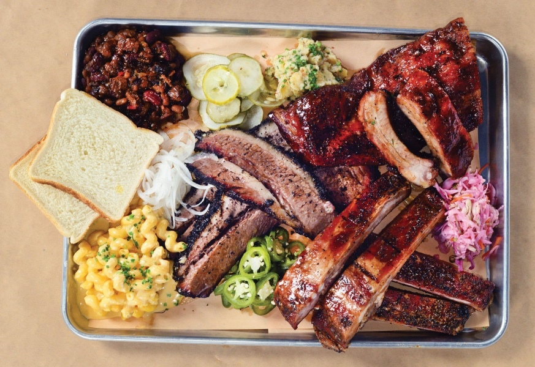

This page is a placeholder that will explain a few things about me and help you navigate to the other two pages.
As you might have guessed, I am a student at the Illinois Institute of Technology (iiT). More specifically I am a first-year ITM student majoring in cybersecurity.
Today I live on campus but I am originally from Texas. It was quite the change, to say the least.
My favorite thing about living in the Lone Star State has to be the food. Nothing can beat Texas barbecue.
